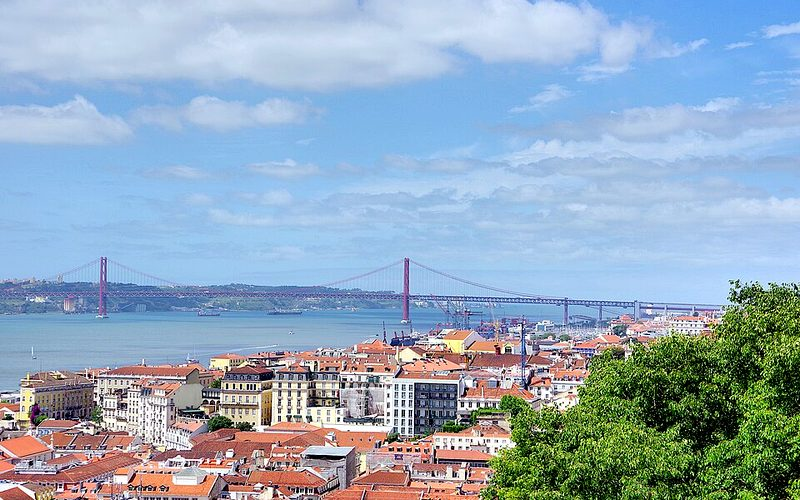
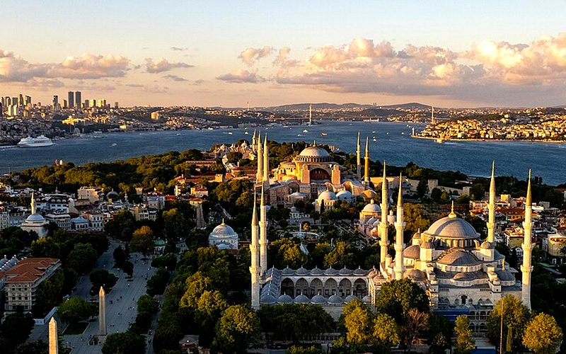

🚋 Lisbon vs 🕌 Istanbul — Head-to-Head Comparison & Live Vote
Lisbon enchants with Atlantic sunshine, vintage yellow Tram 28 hills, azulejo tiles, and soulful Fado evenings. Istanbul astounds as a transcontinental bridge between Europe and Asia, uniting imperial domes, Bosphorus ferries, and the 1461 Grand Bazaar.


📊 4D Urban Pulse Scoreboard: Lisbon (366/400) vs Istanbul (370/400)
🚋 Lisbon — Live Radio & Key Highlights
- 1Older than Rome by centuries, Lisbon is one of Western Europe’s oldest continuously inhabited capitals.
- 2The iconic vintage yellow Tram 28 climbs historic narrow cobblestone hills with gradients reaching 13.5%.
🕌 Istanbul — Live Radio & Key Highlights
- 1Istanbul is the world’s most famous transcontinental megacity, straddling both Europe and Asia across the Bosphorus Strait.
- 2Founded in 1461, the covered Grand Bazaar houses over 4,000 shops weaving through 61 historic vaulted streets.
❓ Frequently Asked Questions: Lisbon vs Istanbul
How far apart are Lisbon and Istanbul, and how long is the flight?
The direct geodesic distance between Lisbon (LIS) and Istanbul (IST) is approximately 3,237 km (2,011 miles), with an estimated direct jet flight time of ~4h 28m.
Lisbon vs Istanbul: Which city is better to visit in 2026?
Lisbon enchants with Atlantic sunshine, vintage yellow Tram 28 hills, azulejo tiles, and soulful Fado evenings. Istanbul astounds as a transcontinental bridge between Europe and Asia, uniting imperial domes, Bosphorus ferries, and the 1461 Grand Bazaar. On REMO World’s 4D Urban Pulse index, Istanbul edges ahead overall (370/400 vs 366/400), while live citizen votes decide the weekly World City Cup crown.
Can I create a free LIS to IST 4D Boarding Pass Story?
Yes! Tap the "4D Boarding Pass LIS → IST" button above to generate a free 9:16 panoramic boarding pass displaying both Lisbon and Istanbul with live clocks and flight duration.